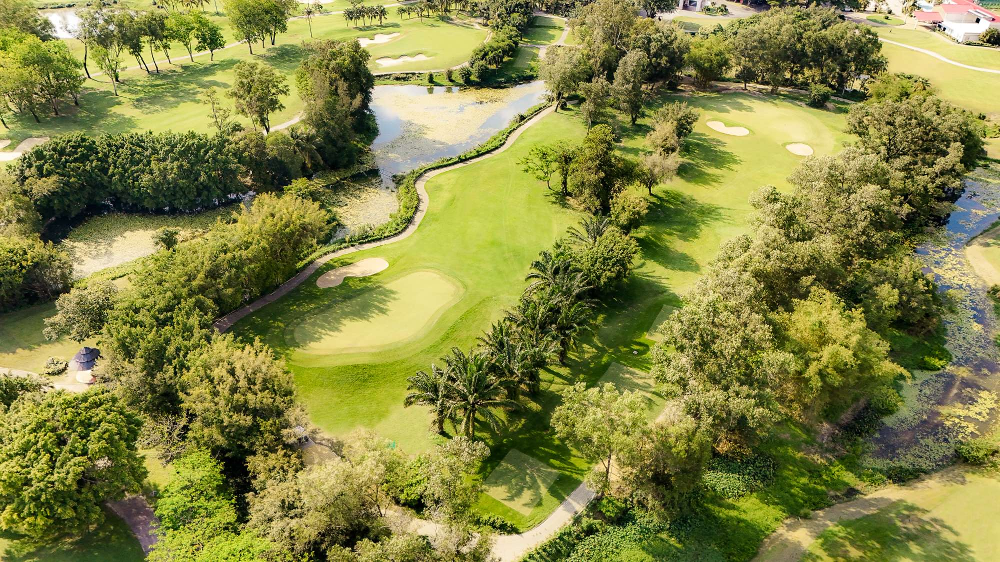
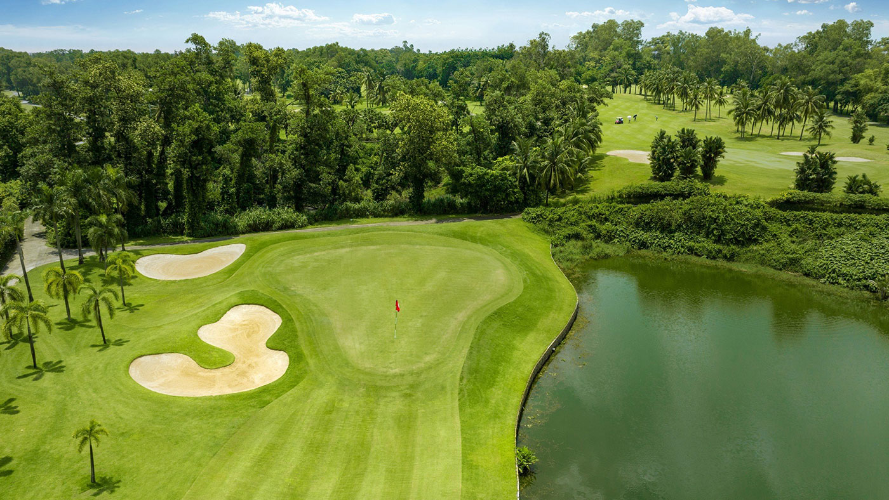
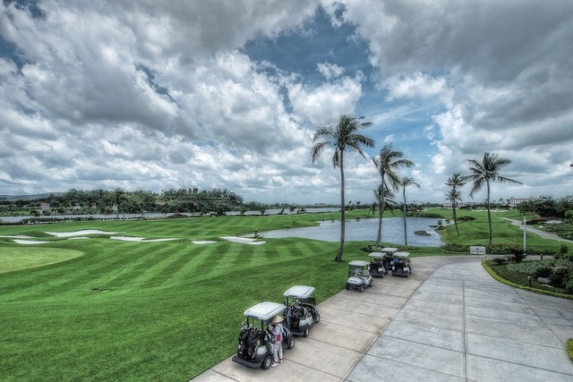
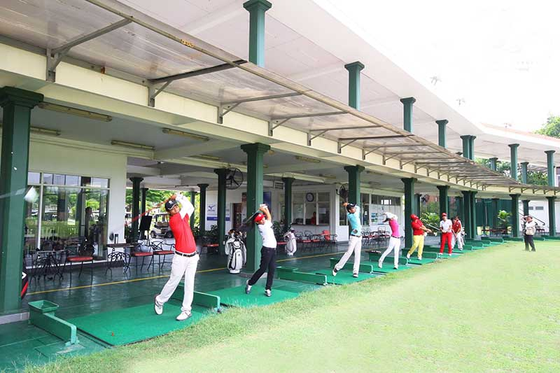

송베 골프 리조트는 베트남에서 가장 오래된 챔피언십 골프장 중 하나로, 국제 골프 기준에 맞춰 설계된 27홀 규모의 대형 코스를 자랑합니다. 전략적인 코스 구성, 풍부한 자연 경관, 그리고 합리적인 그린피 덕분에 한국 골퍼들에게도 꾸준히 사랑받는 호치민 근교 인기 골프장입니다.

송베 골프 리조트는 **Palm Course, Lotus Course, Desert Course** 총 3개의 9홀 코스로 구성되어 있습니다. 각 코스는 완전히 다른 스타일과 난이도를 가지고 있어, 방문할 때마다 새로운 라운딩 경험을 즐길 수 있는 것이 가장 큰 매력입니다.
Palm 코스는 자연스러운 숲 분위기를 살린 안정적인 플레이가 가능하며, Lotus 코스는 워터 해저드가 많아 정교한 샷이 요구됩니다. Desert 코스는 사막 스타일의 벙커와 언듈레이션이 핵심으로 상급자에게 특히 흥미로운 도전이 됩니다.
송베 골프 리조트는 호치민 시내에서 차량으로 약 **45~60분** 거리로 접근성이 뛰어나 여행 일정에 부담 없이 포함시킬 수 있는 코스입니다. 빈즈엉 지역에 위치해 있어 교통 흐름이 비교적 안정적이며 조용하고 여유로운 분위기에서 라운딩을 즐길 수 있습니다.
주변 시설도 잘 갖추어져 있어 라운딩 전후로 휴식, 식사, 카페 등을 편안하게 이용할 수 있다는 점도 큰 장점입니다.
송베의 클럽하우스는 클래식한 분위기와 함께 다양한 편의시설을 갖추고 있습니다. 락커룸, 프로샵, 사우나, 연습장 등이 깔끔하게 관리되고 있으며 레스토랑에서는 한국인 골퍼에게 맞춘 메뉴도 잘 준비되어 있습니다.
캐디들은 친절하고 경험이 많아 코스 공략, 그린 라인, 거리 조언 등을 정확하게 안내해 주어 처음 방문하는 골퍼도 부담 없이 라운딩을 즐길 수 있습니다.
송베 골프 리조트는 ‘호치민 근교 골프장 추천’, ‘27홀 베트남 골프’, ‘가성비 좋은 골프장’ 등의 키워드에서 자주 언급되는 대표적인 골프장입니다. 특히 다양한 스타일의 3개 코스 덕분에 골프 실력과 관계없이 누구나 만족할 수 있는 구성이 큰 강점입니다.
다양한 코스를 경험하고 싶은 골퍼, 가성비를 중시하는 골퍼, 혹은 안정적이고 편안한 라운딩을 원하는 분들께 송베 골프 리조트는 최고의 선택이 될 것입니다.
